I've been discretely listening to strangers' conversations for the past two years, writing down word for word via Twitter the most interesting things I've heard. Out of context they become newly funny, poignant, charming, and odd. O'erheard is a curated dialog between these strangers and Shakespeare.
Shown at
Funny, Isn't It?, Red Eye Gallery, RISD, 2014
 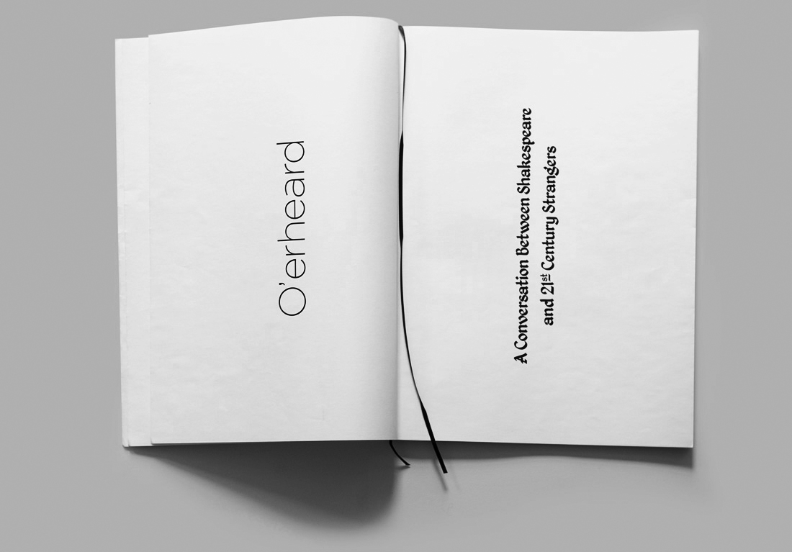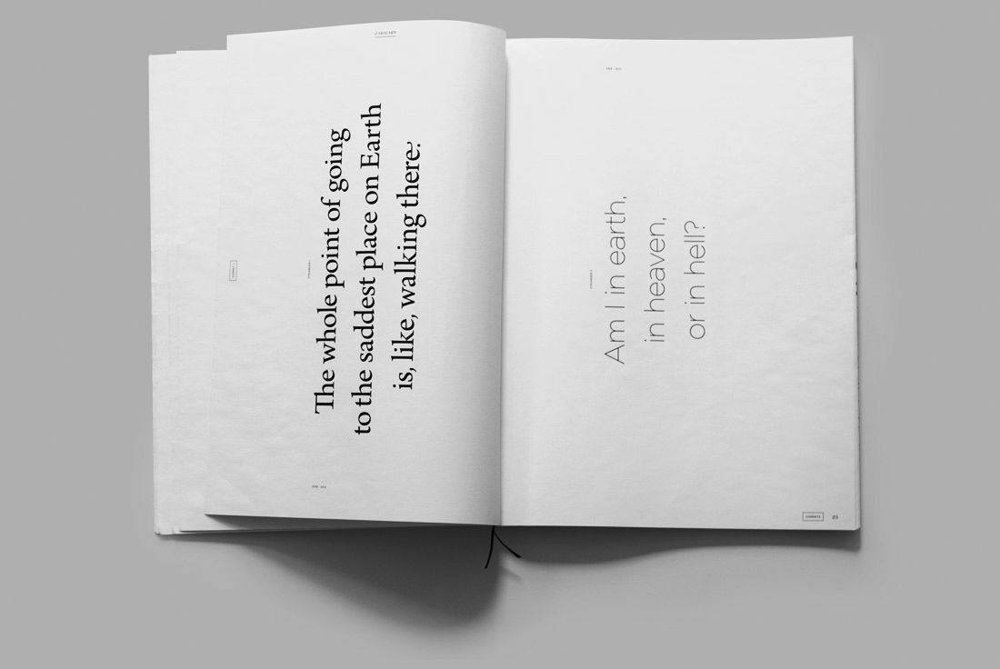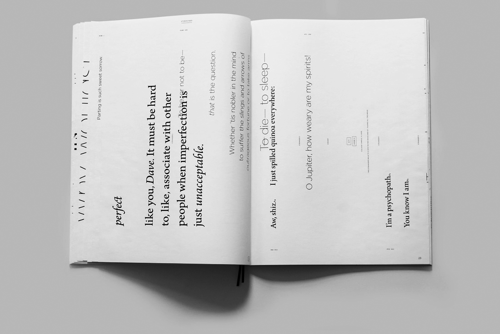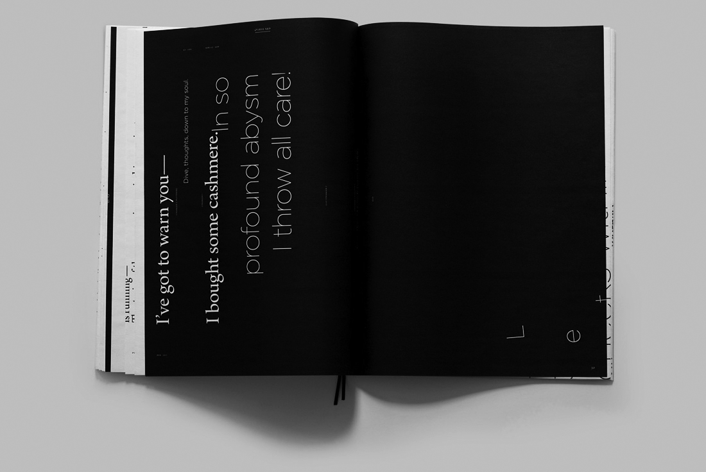
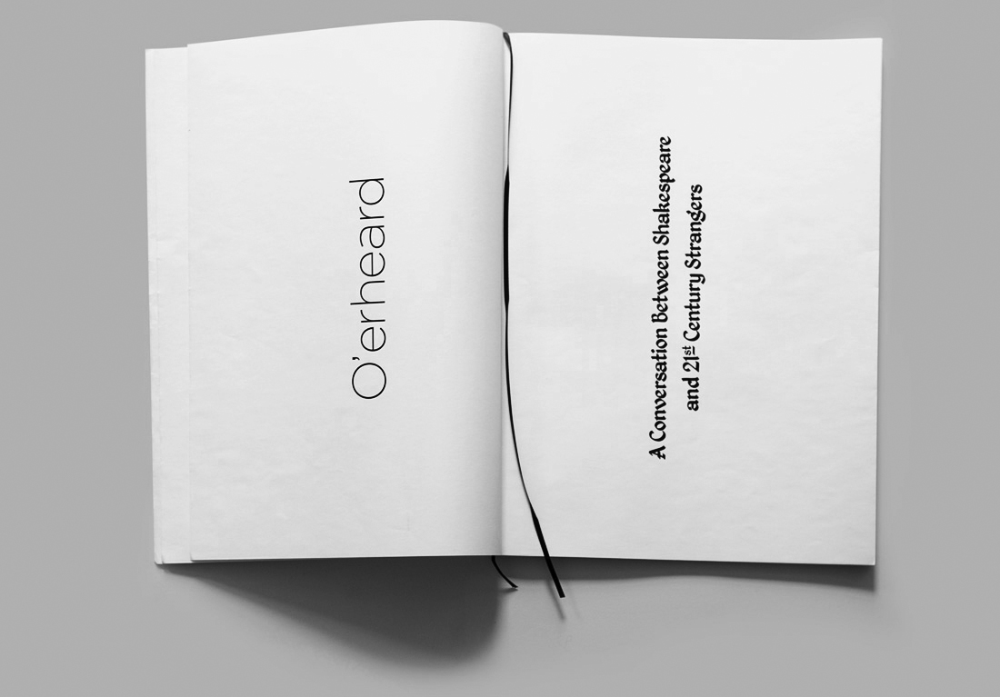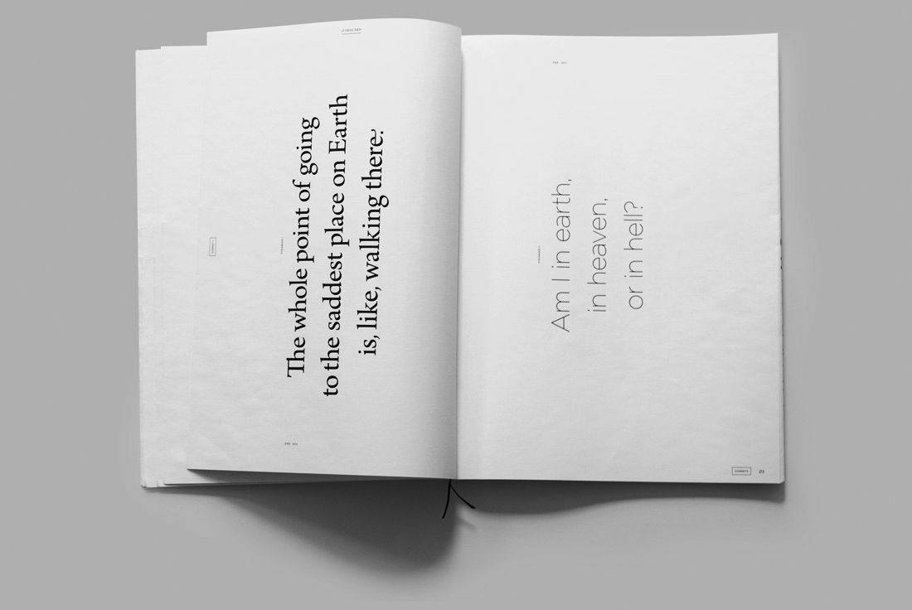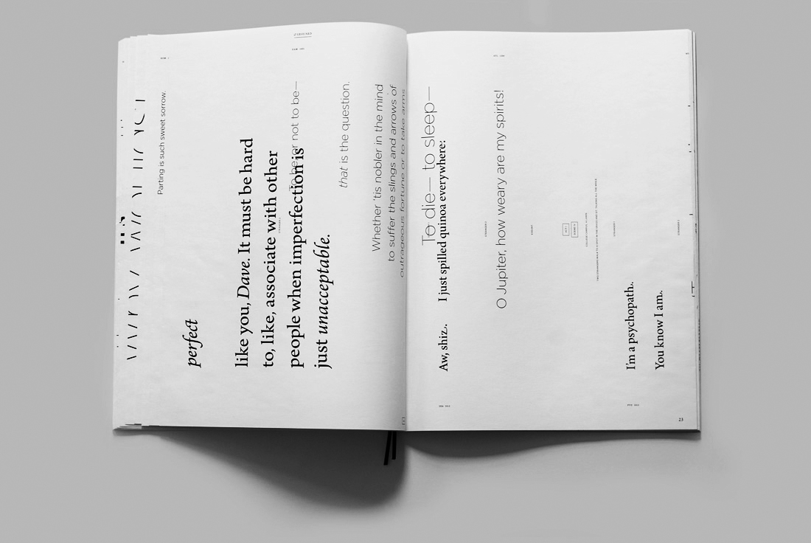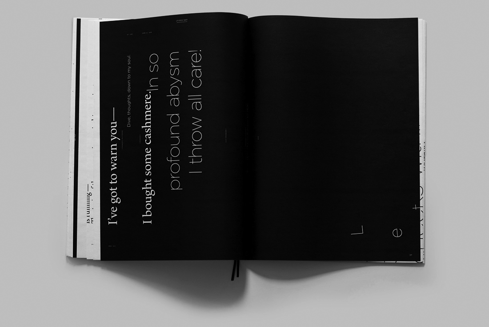 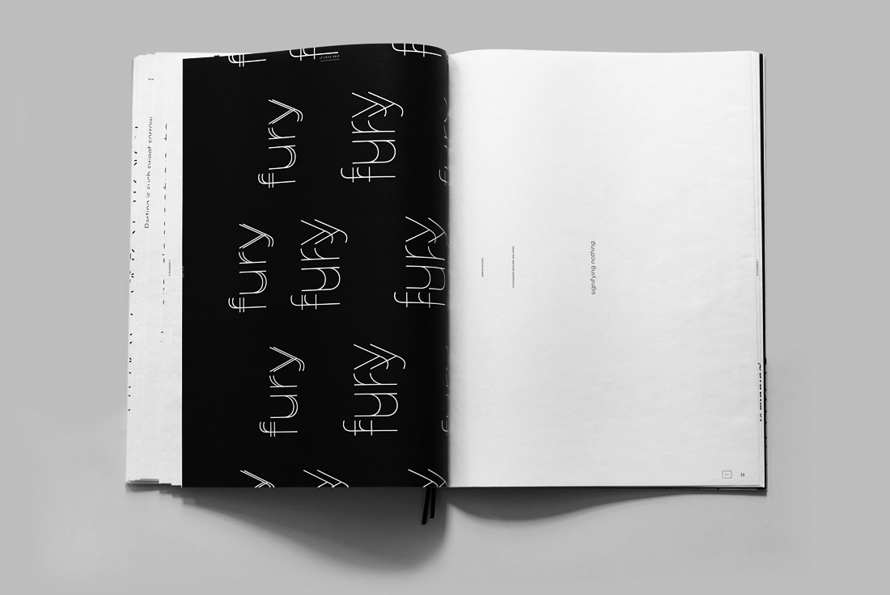
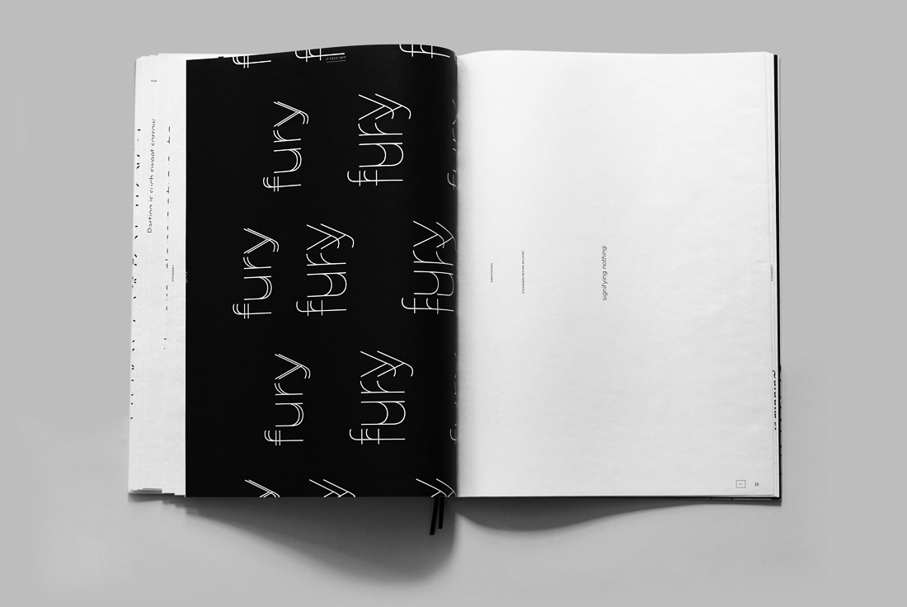 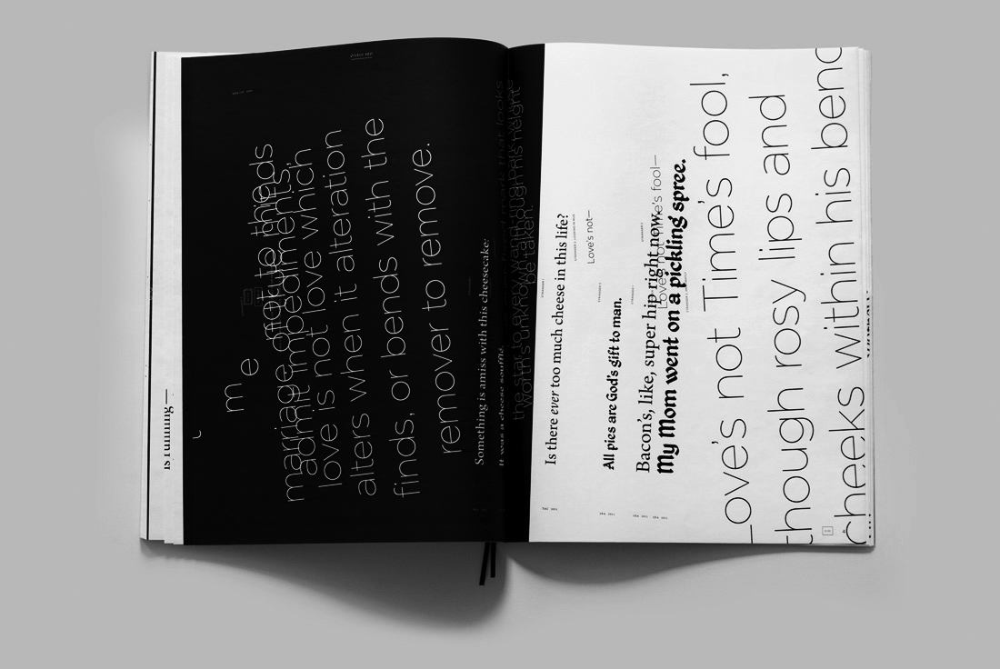
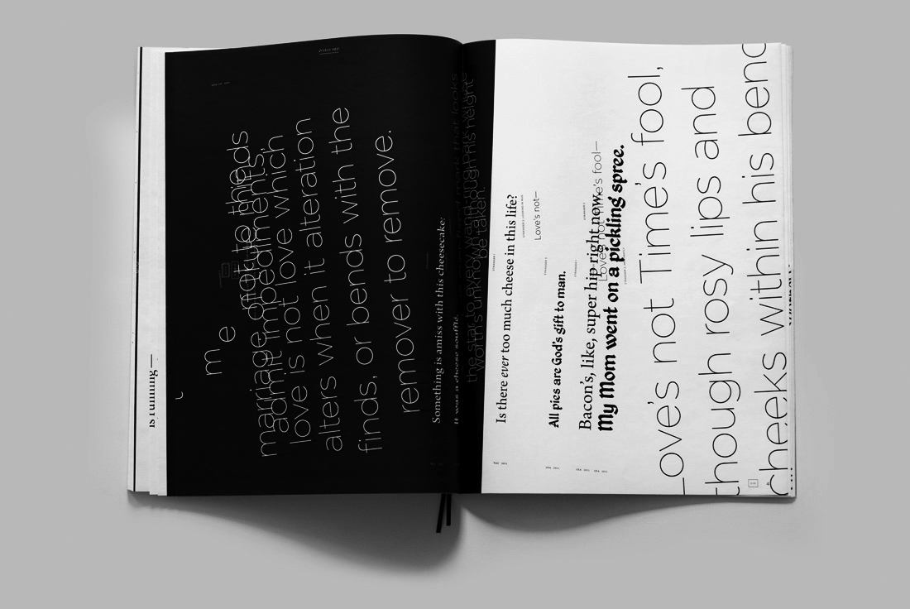